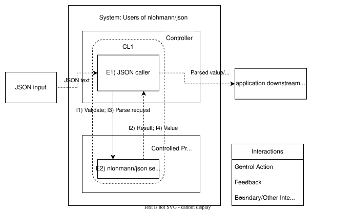

Risk Analysis for nlohmann/json 3.12.0 within eclipse-score/nlohmann_json#
This document provides a risk analysis for the eclipse-score/nlohmann_json repository following the risk analysis approach of the Trustable Software Framework (TSF) RAFIA: Risk Analysis.
0. Methodology (RAFIA / STPA) – What is being done and why#
RAFIA STPA procedure defines ten steps which are followed here and the outcome documented below for every step.
1. Define the scope of analysis#
The system boundary, environment, and boundary-crossing interactions assumed for this scope are summarised in the control structure diagram in Section 3.0.
1.1 Software Under Analysis#
The software under analysis (SUA) is the header-only C++ JSON library `nlohmann/json` (v3.12.0), with:
Implementation - primary include (and internal headers under include/nlohmann/detail) - optional amalgamated single-include header single_include/nlohmann/json.hpp - C++11, no external code dependencies
Purpose - provide JSON parsing and validation per RFC 8259
Evidence - captured extensively in WFJ-*, TIJ-*, NJF-*, NPF-*, and PJD-* statements, which are connected in the trustable graph to the expectation JLEX-02. See Trustable Graph (JLEX-02).
Finding: the trustable graph contains JLEX-01, which is not a S-CORE requirement any more (to be fixed with Bug #2686).
{kind=link}
1.2 System#
The system containing the SUA is expected to contain multiple users which incorporate the SW library. It is typically an ECU containing driving functions and the necessary supporting platform functions.
1.3 Design Assumptions#
Assumptions of Use are captured in the TSF elements:
TA-CONSTRAINTS → AOU-01..AOU-31 (see Trustable Graph (TA-CONSTRAINTS).
{kind=link}
2. Purpose of the analysis#
2.1 Losses (outcomes that are unacceptable for the System’s stakeholders)#
Although nlohmann/json is a library, its misbehaviour can contribute to unacceptable outcomes in it’s using applications. Two use cases should be considered:
Configuration of the system during startup phase
Use of JSON encoded data during normal operation of the system
Rationale for the chosen losses:
As the expected system the SUA is used in is a vehicle control unit, the assumption is there are safety relevant functions in it. The loss(es) are constrained to the scope of S-CORE.
Loss Id |
Loss description |
|---|---|
L1 |
Loss of safety related applications, realizing functions or parts of them e.g. for driving function.. |
2.2 Hazards (System-Level Conditions that can lead to these Losses)#
Using the Losses, we define Hazards (H*) :
Hazard Id |
Hazard description |
Link to loss(es) |
|---|---|---|
H1 |
System is wrongly configured during startup and by this violates safety/security (e.g. system starts in a “debug” mode). |
L1 |
H2 |
System reaction in normal mode is unsafe due to corrupted input data (e.g. system steers into wrong direction). |
L1 |
H3 |
System reaction in normal mode is delayed (e.g. breaking too late). |
L1 |
Note: Use cases during shutdown or crash are not taken into account, as the expectation is that in these states the system is already in safe state or shortly before, so that the JSON lib can not have safety relevant errors. Butt even if not, the hazards would be similar to the above.
2.3 System-level Constraints (system conditions or behaviours that need to be satisfied to prevent hazards)#
In RAFIA/STPA, constraints are “statements that must be true” to avoid a hazard, Unsafe Control Actions (UCA), or causal scenario RAFIA: Risk Analysis. In TSF terms, these constraints are captured as (or mapped onto existing) Items, and are supported by Evidence.
Constraint Id |
Constraint Type |
Description |
Link to Hazard(s) |
Link to UCA |
Links to TSF |
|---|---|---|---|---|---|
C1 |
SLC |
Provision of wrongly decoded JSON data by the SUA to applications is avoided. |
H1; H2 |
UCA-I3-MM |
JLEX-02 |
C2 |
SLC |
Provision of corrupt JSON data input to the SUA is avoided. |
H1; H2 |
UCA-I3-PR |
AOU-23;AOU-24;JLS-24 |
C3 |
SLC |
In case of safety relevant timing constraints are violated, the system is detecting this and will go to safe state. |
H3 |
UCA-I1-TL; UCA-I3-TL |
Note: Column “Link to UCA” is filled in step 5.
3. Control structure#
Here, a control structure is defined:
CL1 (Functional validation/parsing): Application calls accept/parse and reacts to Boolean results and exceptions.
3.0 Control structure diagram (scope + interactions)#
{kind=link}

This diagram is used both to define the scope of analysis (system boundary and environment) and to describe the control structure (elements and interactions). Control actions are shown as solid arrows, feedback as dashed arrows, and boundary/other interactions as a distinct dashed style (see legend). The diagram is a functional abstraction (not a physical or executable model) and does not assume that control actions or feedback are always delivered as intended.
3.1 Elements#
Element Id |
Element name |
Responsibilities |
Roles |
|---|---|---|---|
E1 |
JSON caller |
Calls accept/parse, interprets results, handles errors |
Controller |
E2 |
nlohmann/json service |
Validates/parses input, returns Boolean/value or throws |
Controlled Process |
3.2 Interactions (control actions and feedback)#
Interaction Id |
Interaction description |
IType |
Provider Id |
Receiver Id |
|---|---|---|---|---|
I1 |
Call basic_json::accept on input text |
C |
E1 |
E2 |
I2 |
Return Boolean accept result |
F |
E2 |
E1 |
I3 |
Call basic_json::parse on input text |
C |
E1 |
E2 |
I4 |
Return parsed value or throw exception |
F |
E2 |
E1 |
Note: In this and other tables definitions from STPA results schema are used, e.g. IType.
4. Unsafe Control Actions (UCAs)#
Using the control structure, we identify Unsafe Control Actions (UCA*):
A UCA is an interaction between a controller and a controlled process that can lead to a hazard. In this analysis we use the interactions provided by the SUA and not the control actions done by the JSON caller for the UCA analysis.
Per the RAFIA STPA procedure, the normative Step 4 record is the CA-Analysis table (UCAType × context × control action), from which the UCA table is derived.
4.1 UCA-Contexts#
Context Id |
Unsafe Context |
|---|---|
UCX1 |
WHEN in system startup |
UCX2 |
WHEN in system normal mode |
4.2 CA-Analysis#
The RAFIA STPA procedure requires a CA-Analysis table keyed by control actions (here: I1, I3) and including a full set of rows for each defined UCAType for the SUA provided feedback.
CA Analysis ID |
CA Id |
UCAType |
UCA Context |
Analysis Result |
Hazard(s) |
Justification |
|---|---|---|---|---|---|---|
CAA-I1-NP |
I1>I2 |
NP |
UCX1; UCX2 |
Safe |
Not calling accept does not introduce a new hazard. |
|
CAA-I1-PR |
I1>I2 |
PR |
UCX1; UCX2 |
Safe |
calling accept can not cause any problem. |
|
CAA-I1-MM |
I1>I2 |
MM |
UCX1; UCX2 |
Safe |
If accept returns true for ill-formed JSON, it is not a problem as the successive call of parse will end in an exception leading to safe state. |
|
CAA-I1-ML |
I1>I2 |
ML |
UCX1; UCX2 |
UCA |
H1; H3 |
If accept returns false for well-formed JSON, the caller has to perform a safe action as he expects unavailability of data. |
CAA-I1-DS |
I1>I2 |
DS |
UCX1; UCX2 |
N/A |
Duration (too short) is not meaningful for this discrete call; any timing-related unsafe outcome is captured under TE/TL. |
|
CAA-I1-DL |
I1>I2 |
DL |
UCX1; UCX2 |
N/A |
Duration (too long) is captured as “too late” (TL) for this discrete call outcome at the boundary. | |
|
CAA-I1-TE |
I1>I2 |
TE |
UCX1; UCX2 |
N/A |
“Too early” does not apply: accept is invoked explicitly by the caller, and there is no earlier unsafe timing context defined for UCX1. |
|
CAA-I1-TL |
I1>I2 |
TL |
UCX1; UCX2 |
UCA |
H3 |
If accept is slow, the system-level effect is availability impact rather than an unsafe acceptance decision; covered by C3 |
CAA-I1-SO |
I1>I2 |
SO |
UCX1; UCX2 |
N/A |
Sequence/order does not apply to this single, synchronous call in isolation, nlohman_json is a library so no influence from other callers.. |
|
CAA-I3-NP |
I3>I4 |
NP |
UCX1; UCX2 |
Safe |
If parse is not invoked then no parsed value is produced and this specific hazard mechanism (semantic mismatch) cannot occur. |
|
CAA-I3-PR |
I3>I4 |
PR |
UCX1; UCX2 |
UCA |
H1; H2 |
If parse is called with arbitrarily or systematically corrupted input, only a error in the JSON schema can be detected, but not of JSON data content. |
CAA-I3-ML |
I3>I4 |
ML |
UCX1; UCX2 |
UCA |
H1; H3 |
If parse throws an exception on a well-formed JSON, the caller has to perform a safe action due to unavailability of data. |
CAA-I3-MM |
I3>I4 |
MM |
UCX1; UCX2 |
UCA |
H1; H2 |
If parse returns a value inconsistent with the input JSON then the system may act on incorrect data. |
CAA-I3-DS |
I3>I4 |
DS |
UCX1; UCX2 |
N/A |
Duration (too short) is not meaningful for this discrete call |
|
CAA-I3-DL |
I3>I4 |
DL |
UCX1; UCX2 |
N/A |
Duration (too long) is captured as “too late” (TL) for completion within practical constraints. |
|
CAA-I3-TE |
I3>I4 |
TE |
UCX1; UCX2 |
N/A |
“Too early” does not apply: parse is invoked explicitly by the caller in response to system needs. |
|
CAA-I3-TL |
I3>I4 |
TL |
UCX1; UCX2 |
UCA |
H3 |
Timing issues for parse are covered in C3. |
CAA-I3-SO |
I3>I4 |
SO |
UCX1; UCX2 |
N/A |
Sequence/order is not applicable to a single parse call in isolation, nlohman_json is a library so no influence from other callers. |
Note: In this and other tables definitions from STPA results schema are used, e.g. UCAType.
4.3 UCAs#
The UCA identified in the above analysis are:
UCA Id |
CA |
UCA Type |
UCA Context |
Hazard Id |
UCA Description |
Constraint Id |
|---|---|---|---|---|---|---|
UCA-I1-ML |
I1>I2 |
ML |
UCX1; UCX2 |
H1; H3 |
accept returns false for well-formed JSON |
C4 |
UCA-I1-TL |
I1>I2 |
TL |
UCX1; UCX2 |
H3 |
accept is slow |
C3 |
UCA-I3-PR |
I3>I4 |
PR |
UCX1; UCX2 |
H1; H2 |
parse is called with arbitrarily or systematically corrupted input |
C2 |
UCA-I3-ML |
I3>I4 |
ML |
UCX1; UCX2 |
H1; H3 |
parse throws an exception on a well-formed JSON |
C4 |
UCA-I3-MM |
I3>I4 |
MM |
UCX1; UCX2 |
H1; H2 |
parse returns a value inconsistent with the input JSON |
C1 |
UCA-I3-TL |
I3>I4 |
TL |
UCX1; UCX2 |
H3 |
Timing issues for parse |
C3 |
5. Controller (Functional) Constraints#
This step records the Controller (Functional) Constraints (CFC) derived from the UCA results. This adds to the above constraint table
6. Control Loops and Sequences#
This step is tailored out due to low complexity of the SUA (simple caller/callee interacttion).
7. Causal Scenarios#
This step is tailored out due to low complexity of the SUA (simple caller/callee interacttion).
8. Causal Scenario Constraints#
This step is tailored out due to low complexity of the SUA (simple caller/callee interacttion).
9. Misbehaviours and Expectations#
9.1 Misbehaviours#
In TSF terms, misbehaviours are anything that can cause a deviation from Expected Behaviour (TA-MISBEHAVIOURS_CONTEXT.md).
JLS-24 partly but not fully covers C2. As this misbehaviour leads to an exception, this needs to be covered by the user (see AOU-04).
But AOU-04 is formulated in a wrong way (“exceptions are … turned off”) and has to be corrected (to be fixed with Bug #2686)
9.2 Expectations#
Here, expectations are recorded as explicit, change-controlled statements about the SUA where it is responsible for preventing or mitigating a risk (Hazard, UCA, Causal Scenario) or Misbehaviour. The key SUA expectations already exist as TSF Expectation (JLEX-02) covering C1.
9.3 Assumptions#
Assumptions record conditions for integrators and other system elements (outside the SUA) that are responsible for preventing or mitigating a risk or misbehaviour. Again, assumptions are already covered under TSF as Assumptions of Use (AOU-23, AOU-24).
To make sure C3 is covered by the system a new AOU has to be formulated (to be fixed with Bug #2686). It is not possible to be covered by the SUA, because it has no control over the size of the JSON data provided.
If the uses accept before using parse on a JSON to be deserialized he can avoid an exception due to mal-formed JSON, but he still needs to care for the missing deserialized data in a safe way. AOU for this is missing which will cover C4 (to be fixed with Bug #2686).
10. Review STPA results#
The review is in three steps:
review by a subject matter expert (i.e. someone familiar with nlohman_Json) - documented within github pull request
review by a safety analysis expert - documented within github pull request
audit by external auditor (which is also a STPA practicioner) - documented in audit report